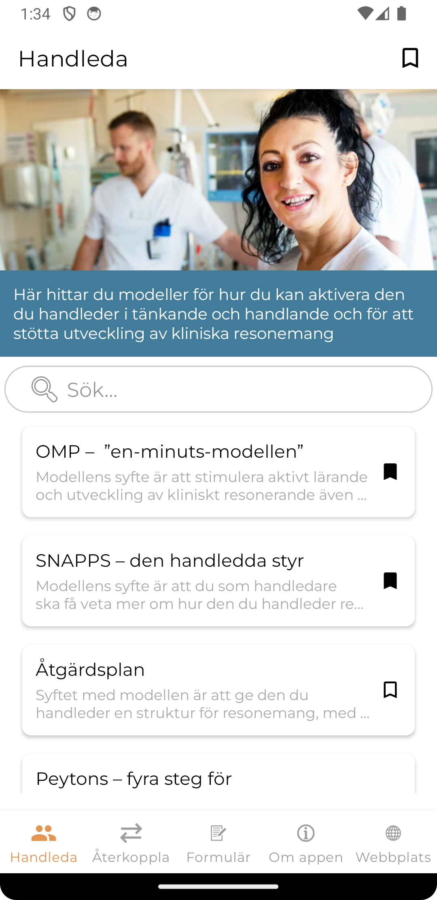

About
Interaction designer and developer specialized in web, iOS, and Android applications. I build clean, scalable, and user-friendly products with strong focus on usability, performance, and design. Experience includes frontend and backend development, Firebase integrations, and full product development from idea to launch.

Intervjuer iOS App
Built during an internship at Cybercom as part of a startup project. A full iOS application developed in 10 weeks featuring video recording, authentication, and real-time chat. Built fully programmatically (no storyboards) to improve scalability and understanding of UI architecture. Technologies: Swift, Firebase, real-time database.

Klinisk Handledning (iOS)
A mobile application developed for clinical supervision and structured guidance within healthcare environments. The app supports supervisors and students by enabling structured communication, documentation, and follow-up during clinical practice. Features: - User authentication and role-based access - Structured guidance workflows - Data storage and synchronization - Clean and accessible UI for healthcare use Built using Swift with a focus on usability, reliability, and clear information flow.
Klinisk Handledning (Android)
Android version of the Klinisk Handledning application, designed to provide the same structured support for clinical supervision. Focused on delivering a consistent cross-platform experience while following Android best practices. Features: - Native Android development with Kotlin - Role-based user flows - Secure data handling - Responsive and accessible interface Built to ensure performance and usability across a wide range of Android devices.

iBeacon Weather App
Experimental iOS app using iBeacon technology. Sends weather notifications automatically when leaving home. Demonstrates background processing and smart notification design.

Café Knus App
Digital loyalty card for a café in Malmö. Users collect stamps and receive rewards with a simple and intuitive interface.

The Reverb Hoodie
Hackathon-winning project: a smart hoodie that converts sensor data into music. Built using Arduino, Raspberry Pi, and Pure Data. I developed the audio system and responsive sound logic.
Check out some of my music